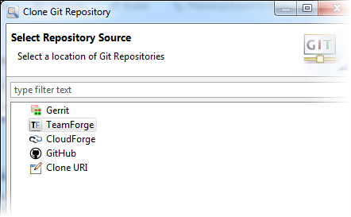

To clone a Git repository from CloudForge, GitHub or some other Git server, initiate
the clone wizard and provide the location of the remote repository, the branches to clone,
and the local destination for the repository.
-
In GitEye's
Dashboard, click Clone
Repository.
The clone wizard is launched.
-
Select the location of your Git repositories and click Next.

-
Select the repository you want to clone and the transfer protocol.
Here's an example for TeamForge.
Click Next.
-
Select the repository branches you want to clone and click Next.
-
Select the local destination for your repository.
The default location is the /git folder in your home
directory, but you can select a different directory on
your hard drive.
-
Click Finish.
The repositories are added to the Git Repositories view where
you can start working with them.